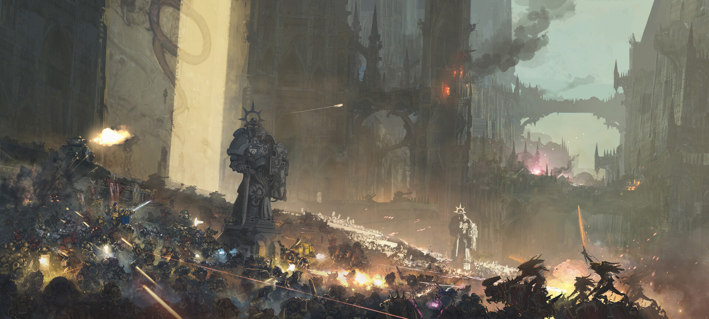
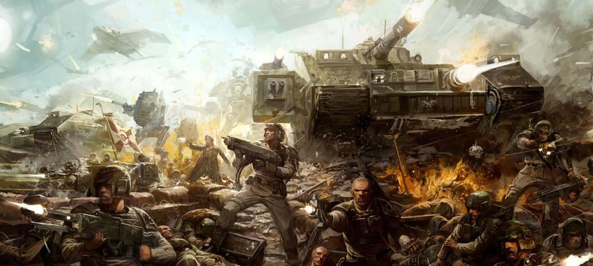
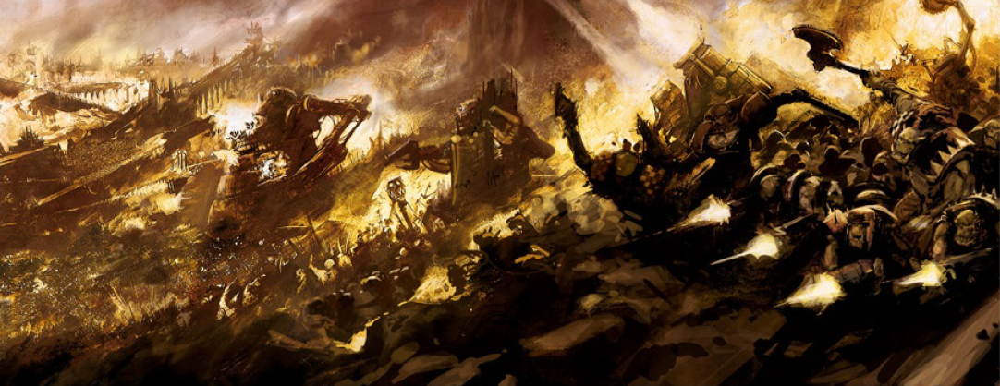

The Horus Heresy
The Horus Heresy was a galaxy-wide civil war that marked the end of humanity's golden age. Horus, once the most trusted and beloved son of the Emperor, was corrupted by the powers of Chaos and turned against his father. Along with his followers, he waged war on the Emperor's loyal forces, leading to one of the bloodiest conflicts in Warhammer 40K history. The final battle saw Horus confront the Emperor on Terra (Earth), resulting in Horus's death and the Emperor's near-fatal injuries. This event forever changed the galaxy, fracturing the Imperium and initiating the grim era of constant warfare that continues to this day.
The Fall of Cadia
The Fall of Cadia marks one of the most devastating events in the history of the Imperium. Cadia, once a vital stronghold in the Cadian System, was the last line of defense against the forces of Chaos pouring into the Imperium during the 13th Black Crusade. In a brutal siege, the forces of Chaos, led by Abaddon the Despoiler, overwhelmed the defenders, breaching the Cadian Gate and laying waste to the planet's surface. Despite the Cadian defense forces' legendary resistance, the battle culminated in the destruction of the planet itself, as the Chaos forces unleashed the full fury of their power. The fall of Cadia shattered the Imperium’s defenses and opened the door for further Chaos incursions into the heart of human space.
The Battle of Armageddon
The Battle of Armageddon is a series of brutal engagements fought on the industrial world of Armageddon, which was invaded by the Ork Warlord Ghazghkull Mag Uruk Thraka. Over three major wars, the Imperium desperately defended the world from total annihilation. The first battle saw massive Ork hordes clash with the Imperial forces, but the Imperium held on due to the intervention of renowned leaders like Commissar Yarrick. The later battles were marked by fierce resistance from the Imperial Guard and Space Marines, but the relentless Ork forces caused massive devastation, and Armageddon remains a strategic battleground to this day.
The Battle of Macragge
The Battle of Macragge occurred when the Tyranid Hive Fleet Behemoth attacked the Ultramarines homeworld, Macragge. The Tyranids launched a devastating assault with their bio-formed creatures overwhelming the Ultramarines' defenses. Despite their strategic brilliance and determination, the Ultramarines were pushed to the brink of annihilation. The defense of Macragge was spearheaded by Chapter Master Marneus Calgar, who led a desperate counter-offensive that ultimately repelled the Tyranid menace. This battle is considered one of the most significant victories for the Imperium, but it also marked the beginning of the Tyranid threat in the galaxy.